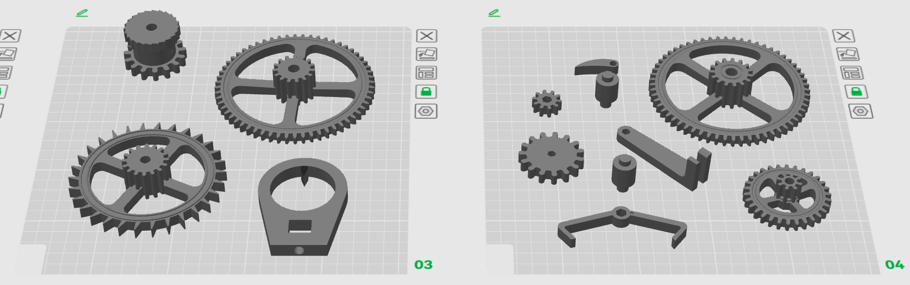
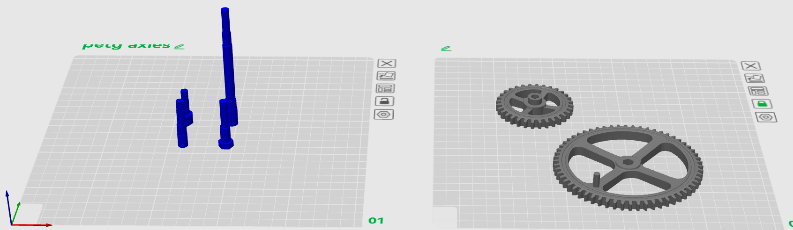
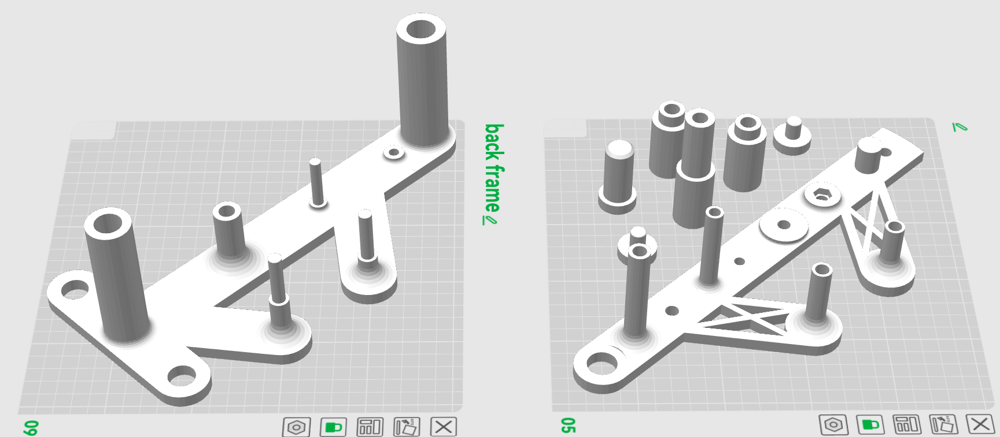
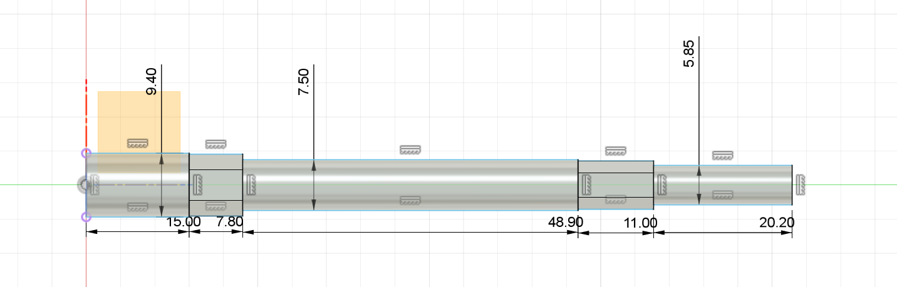

Project
This project documents the design and assembly of a mechanical clock.
Gear train
I Designed a simple gear train to look at the basic principle how an easy mechanical clock works.

| Gear Position | Wheel Teeth | Pinion Teeth |
|---|---|---|
| Escapement | 30 | 8 |
| Intermediate | 60 | 8 |
| Minute | 64 | 18 |
| Intermediate | 72 | 10 |
| Hour | 30 | |
If the escapement gear turns once a minute, a ratio of 60:1 is needed for the minute gear to turn once per hour.
Total ratio escapement to minute wheel: (60/8) × (64/8) = 7.5 × 8 = 60:1
For the hour gear to turn once per hour, a 12:1 ratio is needed from the minute to the hour gear.
Total ratio minute to hour wheel: (72/18) × (30/10) = 4 × 3 = 12:1
Escapement
To try escapement mechanisms a swiss lever escapement was 3D printed. The model was taken from Makerworld.

The initial 3D print of the Swiss lever escapement on the Prusa MK4 failed to function reliably. It initially ticked 2-5 times before stopping, and later the drive weight fell continuously as the pallet fork failed to lock the escape wheel.
Probable causes:
- Low print quality: surface resolution and accuracy on Prusa MK4 ->surfaces too rough, preventing smooth unlocking/locking
- Dimensional inaccuracies: Critical tolerances (0.1-0.2mm for lever drop, fork angles) exceeded due to print shrinkage or extrusion inconsistencies.
Switched to a pendulum escapement because the Swiss lever's ultra-precise tolerances (0.1mm) and smooth surfaces proved unreliable with Prusa MK4 3D printing quality, while pendulums offer more forgiving mechanics with larger clearances.
- Gravity-driven → Less friction-sensitive vs. spring tension
- Longer period (2s swing) → Easier to manufacture and debug
- Visual feedback during testing
Pendulum advantages:
Pendulum Clock
The 3D-model of the clock was taken from Makerworld
  Printing of Parts
All parts were printed using a Bambulab P1S, 0.4mm nozzle and post-processed with a lighter and knife for deburring.
Additional non 3D-printed parts
- M6 threaded rod 1m
- M6 threaded rod 0.3m
- M6 nuts
- fishing line
- wood screws for mounting
- lubricant
Assembly


First testrun
The initial test ran for 30 minutes before stopping, likely due to the pendulum weight rotating and getting stuck on the wooden backplate.
Testet weight (beer 0,3) works
Second testrun
After fixing the pendulum weight, the second run operated smoothly with only a 1-minute offset after one full hour of runtime.
Watchface
To create a custom watchface, laser cutting/engraving was used.
- Incscape
- Setup circle 240mm (red Hairline to cut)
- Center circle 150mm (red Hairline to cut)
- Group
- Add picture of watch face
- Create Bitmap of picture
- Use grouped circles to cut watch face
- Export as .svg
- Cut/engrave with Lasercutter trotec speedy 100 C 40

- final pruduct
Problem
The weight that powers the clock will over time bend the main bolt nad lock the mechanism eventually.
Solution: different material(metal)
- ⌀5.85mm
- inner circle Hex ⌀6.2mm
- ⌀7.5mm
- inner circle Hex ⌀7.9mm
- ⌀9.4mm

Lathe
Starting with a turning blank brass ⌀10mm